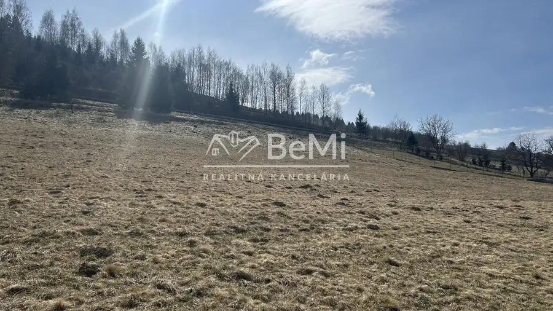
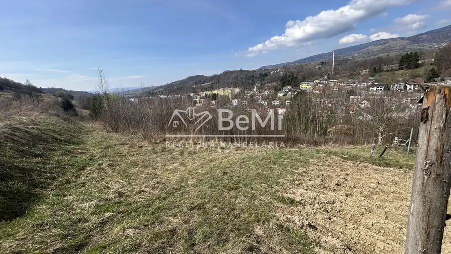
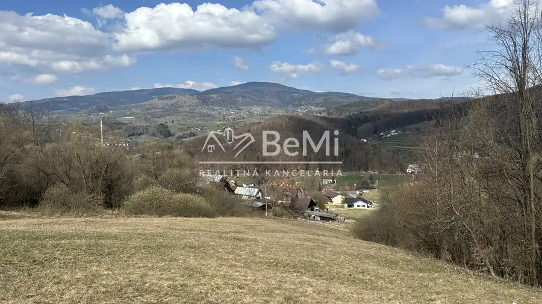
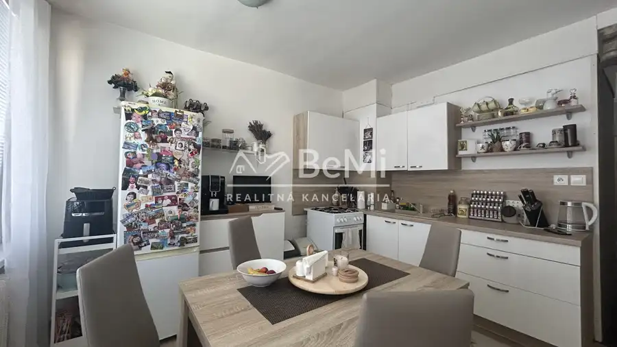
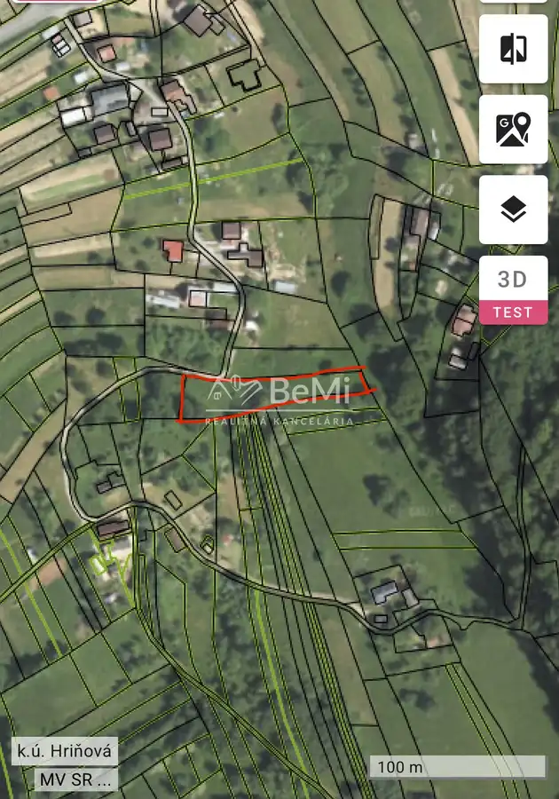

Aktuálna ponuka
6 nehnuteľností, predovšetkým pozemky, byty. Každá má vlastnú stránku s fotkami, popisom a mapou.
Prezrieť ponuku
 Tu bude Vaša fotkapošlite ju e-mailom, obratom ju vymeníme
Tu bude Vaša fotkapošlite ju e-mailom, obratom ju vymenímeSamuel Sojka · Realitný maklér · BeMi realitná kancelária
Volám sa Samuel Sojka, som realitný maklér kancelárie BeMi realitná kancelária. Predaj, prenájom a odhad ceny nehnuteľností, lokality Hriňová a Rimavská Sobota.
Viac o mneVolám sa Samuel Sojka. Som realitný maklér kancelárie BeMi realitná kancelária a pôsobím predovšetkým v lokalitách Hriňová a Rimavská Sobota (Banskobystrický kraj).

6 nehnuteľností, predovšetkým pozemky, byty. Každá má vlastnú stránku s fotkami, popisom a mapou.
Prezrieť ponukuHriňová, Rimavská Sobota a okolie. Ponuku si môžete prezrieť podľa lokality.
Nehnuteľnosti v lokalite
Odhad trhovej ceny, príprava prezentácie, obhliadky, zmluvy a odovzdanie nehnuteľnosti.
Dohodnúť stretnutie
Byt 98 800 €Na predaj veľký 2izbový byt v meste Rimavská Sobota Rimavská Sobota 2-izbový72 m²9. podlažie
Pozemok 203 640 €Na predaj stavebný pozemok 1697 m², v obci Hriňová HriňováTomuto výberu zatiaľ nezodpovedá žiadna ponuka. Napíšte mi, čo hľadáte.
Každý špendlík je jedna nehnuteľnosť z mojej ponuky. Kliknite a pozrite sa.
© prispievatelia OpenStreetMap
Na čo sa pýtate najčastejšie, skôr než sa stretneme.
Odhad trhovej ceny vychádza z aktuálnych ponúk a predajov v lokalite, nie z cenníkových tabuliek. Podmienky Vám poviem pri prvom telefonáte.
Najprv obhliadka a odhad ceny, potom príprava prezentácie (fotografie, popis, inzercia), obhliadky so záujemcami, rezervačná zmluva, kúpna zmluva, návrh na vklad do katastra a odovzdanie nehnuteľnosti. O každom kroku viete vopred.
Najrýchlejšie cez WhatsApp alebo telefón. Termín stretnutia alebo obhliadky dohodneme podľa Vás.